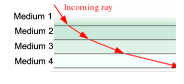
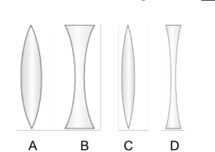
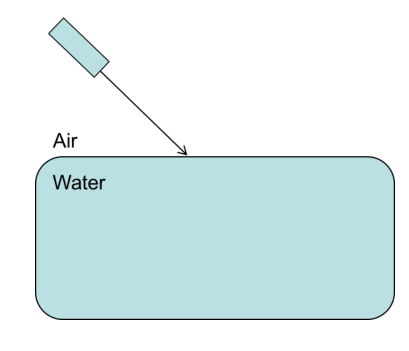
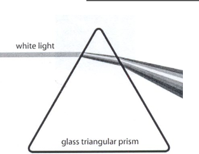
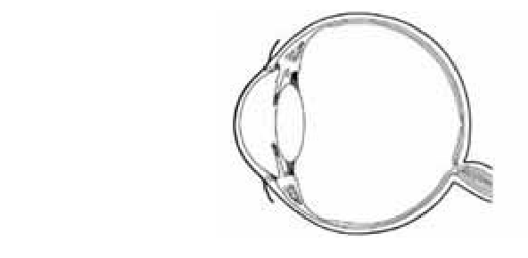
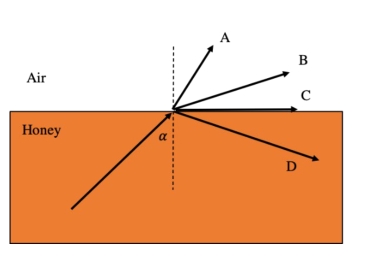
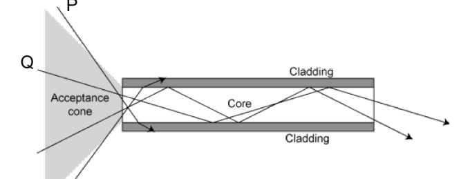

Section 1: Multiple choice (9 marks)
Questions 1 and 2 refer to the diagram below, which shows a ray of light passing through four different media.

Based on the change in direction from medium 1 to medium 2, which statement is correct?
Which option best represents the materials of media 1 to 4? (Note: light travels faster in water than in oil.)
The light bends further from the normal each time, so it speeds up at every boundary: from slowest (glass) to fastest (air).

Which of the lenses above is concave and has the longest focal length?
B and D are concave. The thinner lens (D) bends light less, so it has the longer focal length.
Which part of the eye lets us sense red, green and blue colours?
What colour of light do you need to add to magenta to give white light?
Magenta = red + blue, so adding green gives red + green + blue = white.
When viewed through a green filter, what colour would you expect a red object to appear?
Different isotopes of an element have atoms whose nuclei have the same number of protons but different numbers of:
Which ranks the penetrating range of the three main types of radiation from least to most?
Which ranks the speed of the three main types of radiation from slowest to fastest?
Section 2: Short answer (33 marks)
Question 1 (3 marks)
A laser is directed into a large container of water, as shown.

On paper, show the path of the laser as it enters and leaves the water. Draw the normal, and label the angle of incidence and the angle of refraction as the laser enters the water. Describe your diagram, then compare.
- The normal is drawn at 90° to the water surface where the ray enters (1 mark).
- The ray bends towards the normal as it enters the water (it slows down) (1 mark).
- The angle of incidence (i, between the incoming ray and the normal) and the angle of refraction (r, between the ray in the water and the normal) are labelled correctly, with r smaller than i (1 mark).
Question 2 (3 marks)
A student set up an experiment using a prism to separate white light into its colours.

Name the process:
Colours emerging, from top to bottom: , , , , ,
Red light is refracted (bent) the least and violet the most.
Question 3 (4 marks)
The eye shown below is myopic (short-sighted): the person has trouble focusing distant objects onto the retina because the lens system is too strong.

On paper, show the path of two parallel rays in the uncorrected eye. Describe it, then compare.
The two parallel rays are refracted by the cornea and lens and meet in front of (before) the retina, then spread out again before reaching it, so the image is blurry.
Show a possible corrective lens and the new path of the light. Describe it, then compare.
A concave lens is placed in front of the eye (1 mark). It spreads the parallel rays out slightly, so the eye's lens now focuses them at the back of the eye, on the retina (1 mark).
Question 4 (3 marks)
White light is directed at a rectangular prism of honey, as shown. The light refracts and disperses. At a certain angle (α), an observer sees green light travelling along the flat face of the prism (path C).

What is the special name for the angle (α) at which the green light refracts along path C? The
Blue light refracts more than green light. Which path would you expect the blue light to take?
Name the process happening to the blue light:
Blue light bends more, so its critical angle is smaller than α. At angle α it is beyond its critical angle and is totally internally reflected.
With red, green and blue light available, what combination would you need to make yellow light?
Explain how combining a cyan filter and a yellow filter produces green light.
A cyan filter lets green and blue through (it blocks red). A yellow filter lets green and red through (it blocks blue) (1 mark). So only green light can pass through both filters (1 mark).
Visible light is a small part of the electromagnetic spectrum. Put these bands in order from longest to shortest wavelength: radio waves, microwaves, X-rays, gamma rays.
Longest: → → → :shortest
For 9038Sr, state the
- mass number:
- atomic number:
- number of protons:
- number of neutrons:
Complete the alpha decay equation for thorium-232 to radium:
23290Th → Ra (mass number , atomic number ) + 42He
An alpha particle (4 nucleons, 2 protons) is emitted, so the mass number falls by 4 and the atomic number falls by 2. (Radium's atomic number is 88; the original marking key wrote 92.)
Complete the beta decay equation for bismuth-214 to polonium:
21483Bi → Po (mass number , atomic number ) + 0-1e
In beta decay a neutron becomes a proton, so the mass number stays the same and the atomic number rises by 1.
Write the equation for the gamma decay of strontium-86 (in an excited state, 86m38Sr).
86m38Sr → 8638Sr + γ (gamma ray, 00γ). The mass and atomic numbers don't change: the nucleus just loses energy.
A sample of krypton-85 has a half-life of 11 years. There is initially 88 g in the sample. Find the mass of krypton-85 remaining after 33 years.
33 ÷ 11 = 3 half-lives. 88 → 44 → 22 → 11 g.
Explain what happens to the nucleus of a radioisotope when it emits a beta particle.
A neutron in the nucleus turns into a proton, which stays in the nucleus (1 mark), and an electron, which is ejected from the nucleus as the beta particle (1 mark).
Question 14 (3 marks)

Using the principles of refraction, explain why light entering the optic fibre at Q continues down the fibre, but light entering at P does not. (Hint: light travels more slowly in the core than in the cladding. The acceptance cone shows the directions from which light will stay in the fibre.)
- Ray Q meets the core–cladding boundary at an angle greater than the critical angle (1 mark).
- This causes total internal reflection, as the light is travelling from the slower core towards the faster cladding (1 mark).
- Ray P meets the boundary at an angle less than the critical angle, so it refracts out into the cladding instead of reflecting (1 mark).